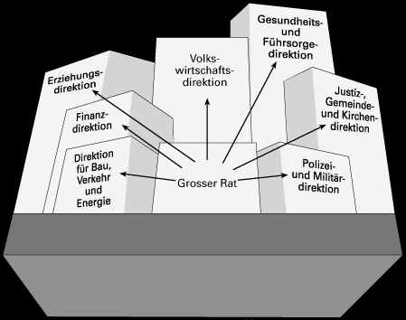

| Direkton | Direktor(in) | Adresse | Telefon/Fax | |
| Volkswirtschaftsdirektion | Zölch-Balmer Elisabeth | Münsterplatz
3a 3011 Bern |
Tel. ++4131 633 48 44 Fax.++4131 633 48 52 |
|
| Gesundheits-
und Fürsorgedirektion |
Behnd Samuel | Rathausgasse
1 3011 Bern |
Tel. ++4131 633 79 18 Fax.++4131 633 79 09 |
|
| Justiz-,
Gemeinde-, und Kirchendirektion |
Annoni Mario | Münstergasse
2 3011 Bern |
Tel. ++4131 633 76 76 Fax.++4131 633 76 25 |
|
| Polizei und Militärdirektion | Widmer Peter | Kramgasse
20 3011 Bern |
Tel. ++4131 633 47 23 Fax.++4131 633 54 60 |
|
| Finanzdirektion | Lauri Hans | Münsterplatz
12 3011 Bern |
Tel. ++4131 633 43 07 Fax.++4131 633 53 99 |
|
| Erziehungsdirektion | Schmid Peter | Sulgeneckstr.
70 3005 Bern |
Tel. ++4131 633 85 11 Fax.++4131 633 83 55 |
|
| Direktion
für Bau, Verkehr und Energie |
Schaer-Born Dori | Reiterstr.
11 3011 Bern |
Tel. ++4131 633 31 11 Fax.++4131 633 36 05 |
|